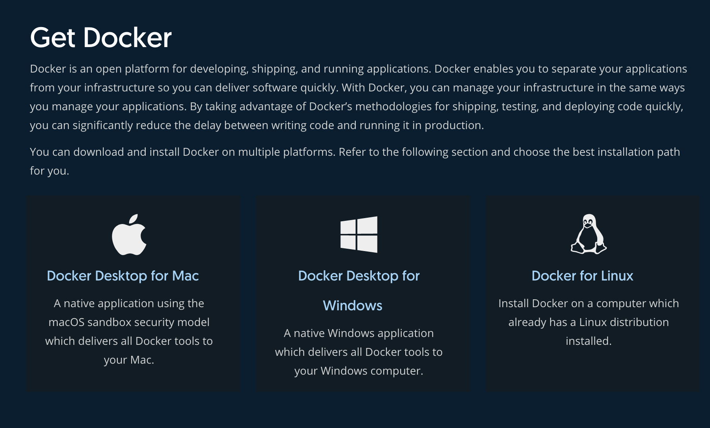
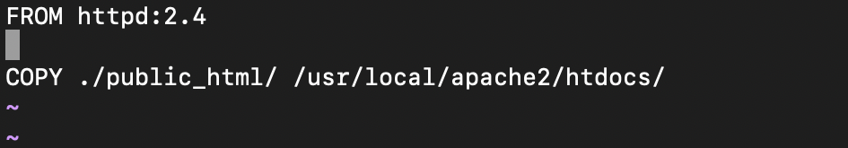
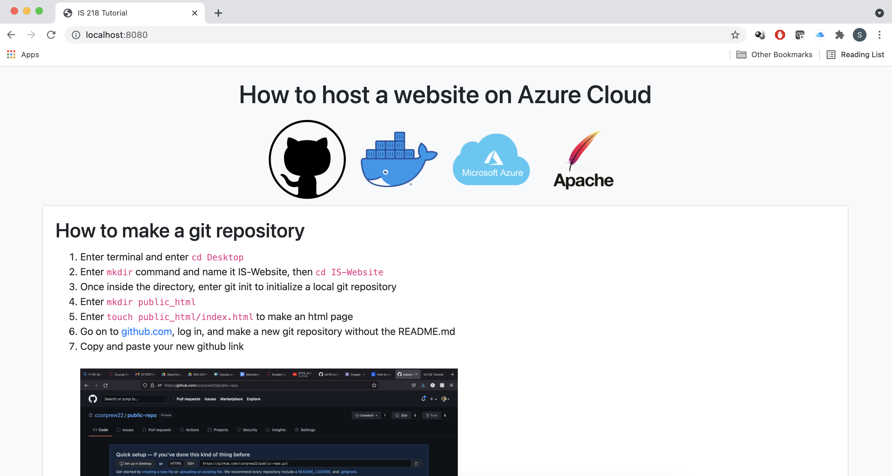

How to host a website on Azure Cloud
How to make a start an Apache server on Docker
- Download docker from docker.com
- Enter terminal and enter your project directory.
- Enter
touch Dockerfile if it does not already exist, then vi Dockerfile
A Dockerfile is a text document that contains all the commands a user could call on the command line to assemble an image

- Make sure your Dockerfile has the following text:
FROM httpd:2.4
COPY ./public_html/ /usr/local/apache2/htdocs/

- Save and exit vi.
- In the terminal, enter the following
docker build -t my-apache .
- Enter
docker run -dit -p 8080:80 --name my-running-app my-apache
- Now open up your favorite browser and goto this url localhost:8080 to see your site.
